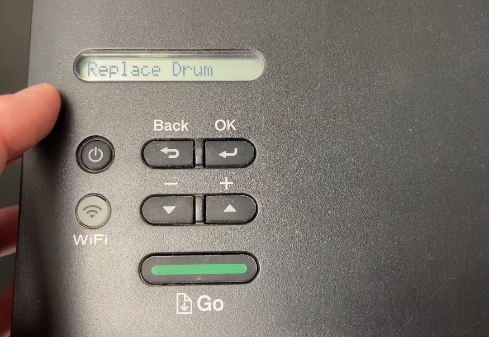
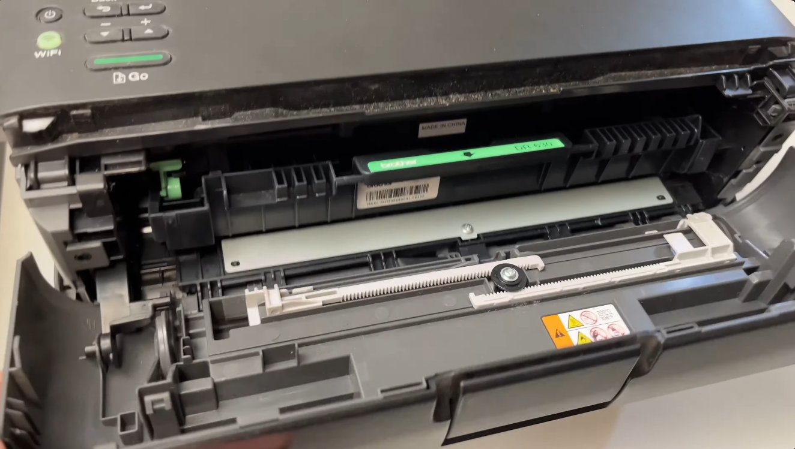
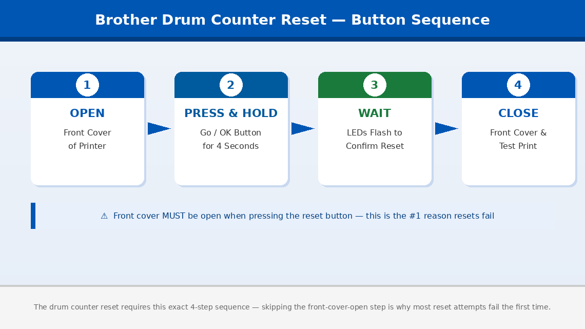
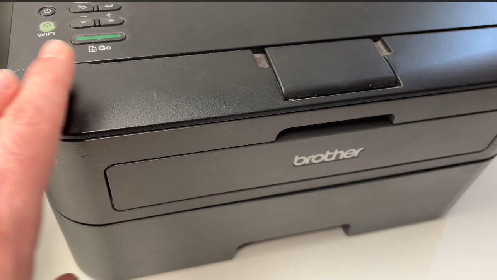
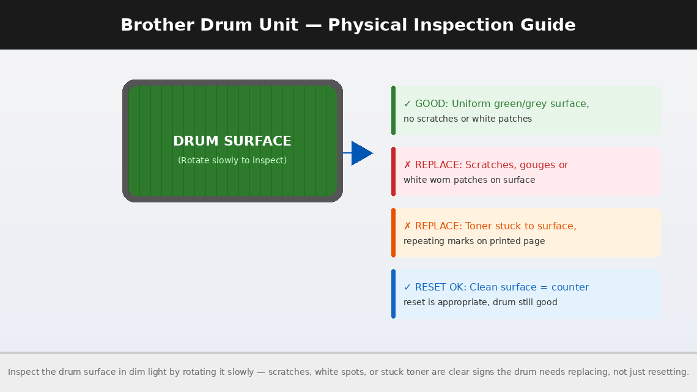

Brother Printer 'Replace Drum' Message: How to Reset the Counter
The 'Replace Drum' message on a Brother printer is a page counter warning, not a sensor reading. The drum itself may be in perfectly good condition — the printer has simply counted enough pages to display the warning. The counter needs to be manually reset after you install a new drum. If you've just installed a new drum and the message persists, the counter reset wasn't completed — Fix 2 walks through the exact key sequence.
What Does ‘Replace Drum’ Actually Mean?
What's really happening, the “Replace Drum” message means Brother’s internal drum page counter has reached or exceeded the manufacturer’s recommended page yield for the drum unit — and the printer is alerting you that it’s time to consider a replacement.
A drum unit in a Brother laser printer is the cylindrical component that transfers toner from the cartridge onto the paper during the printing process. Unlike inkjet printers that spray liquid ink, laser printers use a drum that gets electrostatically charged, attracts toner powder, and rolls it onto the page. Over time, the drum’s surface gradually degrades — it gets microscopic scratches, loses its charge-holding ability, and eventually starts producing faded or streaky prints.
Brother sets a recommended page yield for each drum unit — typically 12,000 to 30,000 pages depending on the model — and builds a counter into the printer’s firmware that tracks every page printed. When that counter hits the limit, “Replace Drum” appears.
The critical thing to understand is this: the counter tracks pages, not actual drum condition. A drum used for 12,000 pages of light text documents may still be in excellent physical condition. Another drum used for 12,000 pages of dense graphics or heavy toner coverage may genuinely need replacing. The counter is a conservative average estimate — not a precise physical measurement.
This is why the reset is legitimate and not just a workaround: when you install a new drum, the counter needs to be reset to zero so the printer starts tracking the new unit from scratch. And when the old drum is still producing clean output, resetting the counter on the existing unit is a perfectly reasonable choice to keep printing until quality actually degrades.
The message will never go away on its own. It requires a manual reset — always.

Tools You’ll Need
Good news: you need nothing physical for this fix. Here’s the complete list:
- Your Brother printer (powered on)
- Your hands
- The specific button sequence for your model (covered in Fix 2 below)
- About 2 minutes of your time
No screwdrivers, no software downloads, no computer connection required for the reset itself.
Step-by-Step Fixes (Start Here and Work Down)
Go through these in order. Most people stop at Fix 1 or 2.
Before resetting anything, make sure the drum unit itself is physically seated correctly. A drum that is slightly cocked in its slot, not fully pushed in, or missing its orange protective cover removal can cause the printer to display “Replace Drum” even when the reset is performed correctly — because the printer’s drum detection sensor isn’t making proper contact.
- Open the front cover of the printer — the large panel that swings down or forward to reveal the toner cartridge and drum assembly.
- Grip the drum unit and toner cartridge assembly together (they usually come out as one combined unit on most Brother models) and slide it straight out toward you.
- Check the drum unit carefully:
- Is there any orange or yellow protective packaging still attached? New drum units ship with protective tape, a drum cover strip, and sometimes orange clips — all must be completely removed before use.
- Is the drum unit firmly clicked into the toner cartridge? On most Brother models, the cartridge slots into the drum with a click — a loose connection can interfere with the sensor.
- Slide the assembly firmly back into the printer until it stops with a definitive click.
- Leave the front cover open and proceed directly to Fix 2.

This is the fix. Brother printers require a specific button sequence to reset the drum counter, and it must be performed while the front cover is open. The exact steps vary slightly between models, but the logic is the same across the entire Brother laser printer range.
For Brother HL series (HL-2130, HL-2240, HL-L2305W, HL-L2350DW, and most HL models):
- Power the printer on and ensure it is displaying the “Replace Drum” or “Drum End Soon” message.
- Open the front cover of the printer.
- Press and hold the Go button (or OK button depending on your model) for 4 seconds.
- The control panel will flash or all LEDs will illuminate briefly — this confirms the counter has been accepted.
- Release the button and close the front cover.
- The “Replace Drum” message should now be gone.
For Brother MFC and DCP series with an LCD display (MFC-L2700DW, MFC-7360N, DCP-L2520D, and similar):
- Power the printer on with the “Replace Drum” message showing.
- Open the front cover.
- On the control panel, press OK.
- Use the arrow keys to navigate to “Drum” and press OK.
- Select “Reset” and press OK to confirm.
- The display will ask you to confirm — press 1 or select “Yes” depending on your model.
- Close the front cover. The message should be cleared.
For Brother printers with a touchscreen panel (newer MFC-L series):
- Open the front cover.
- On the touchscreen, a “Replace Drum” notification will appear with a “Reset” option directly on screen.
- Tap “Reset” and confirm when prompted.
- Close the front cover.

On some Brother models — particularly older ones — the drum counter reset takes effect only after a full power cycle. If you performed the reset sequence and the message is still showing, this step is often all that’s needed.
- After completing the reset sequence in Fix 2, close the front cover.
- Press the Power button to turn the printer completely off.
- Wait 30 seconds.
- Power the printer back on.
- Allow it to fully initialise — this may take 30–60 seconds on laser printers as the fuser warms up.
- Check the display — the “Replace Drum” message should no longer be present.
- Print a test page to confirm normal operation.

Brother printers use two similar but distinct messages that require different responses, and confusing them leads to unnecessary frustration.
- “Drum End Soon” — This is an early warning. The counter is approaching the limit but has not reached it. The printer will continue working normally. You can reset this early warning the same way as above, or simply wait until the full “Replace Drum” message appears. No immediate action is required.
- “Replace Drum” — The counter has reached its set limit. The printer may restrict printing or refuse to print entirely depending on the model. This requires either a reset or a physical drum replacement.
- “Drum Stop” — On a small number of Brother models, if the “Replace Drum” message is ignored for an extended period, the printer escalates to “Drum Stop” and locks out printing completely. This also clears with the same reset sequence — but requires the front cover to be opened as described in Fix 2.
If the reset sequence completes successfully but the “Replace Drum” message returns within a very small number of printed pages, or print quality is noticeably poor with streaks, spots, or faded sections, the drum unit may have a genuine physical problem rather than just a counter issue.
- Unplug the printer and allow it to cool for at least 10 minutes.
- Open the front cover and remove the drum and toner cartridge assembly.
- In a dim room or with a torch, slowly rotate the drum — the green or grey cylinder — and inspect its surface as it turns.
- Look for any of the following:
- Scratches or gouges running along the length of the drum
- White spots or patches where the coating has worn away
- Toner stuck to the drum surface that doesn’t wipe away with a clean, dry, lint-free cloth (never use water or solvents on a drum)
- A consistent repeating mark or streak that appears at the same interval as the drum’s circumference — a classic sign of a damaged drum spot
- If the drum surface looks clean, smooth, and uniformly coloured with no visible damage, the drum is likely still serviceable and the message clearing with a reset is perfectly appropriate.
- If you find visible surface damage, the drum genuinely needs replacing — resetting the counter on a damaged drum will produce progressively worse print quality.
Replacement drum units for common Brother models:
- Brother DR-2315 / DR-2375 (for HL-L2300/2305/2321 series): approximately ₹1,200–₹2,500 (India) / $15–$35 (US)
- Brother DR-3355 / DR-3435 (for HL-L5000/5100 series): approximately ₹2,000–₹4,000 (India) / $30–$60 (US)

When to Call a Professional
The “Replace Drum” message on Brother printers is one of the simplest errors to resolve at home — but there are circumstances where the issue goes beyond what a reset or drum replacement can fix:
- The reset sequence is performed correctly but “Replace Drum” reappears immediately on the very next print, without accumulating any additional page count. This is an uncommon but genuine sign of a faulty drum sensor or a corrupted firmware counter that requires board-level diagnosis.
- Print quality remains poor after installing a new drum and resetting the counter — streaks, fading, ghost images, or consistent repeating marks. If a new drum doesn’t resolve print quality issues, the problem may be with the fuser assembly rather than the drum itself. Fuser replacement is a professional job on most Brother models.
- The printer displays “Machine Error” codes (such as Machine Error 50, 51, or similar numbered codes) alongside or instead of the drum message. These codes indicate hardware faults entirely separate from the drum counter — they require diagnosis by an authorised Brother service partner.
- Your printer is under warranty. Brother offers a standard 1-year warranty on most printer models in India and a 1–2 year warranty in the US. If your printer is within the warranty period, contact Brother support before performing any internal inspection — warranty service is free.
To reach Brother support:
- India: www.brother.in/support — Customer care: 1800-103-5440 (toll-free, Monday to Saturday)
- US: support.brother.com — Phone: 1-877-276-8437
Have your model number, serial number (on the back label of the printer), and purchase date ready when you contact them.
Quick Summary
| Fix | Difficulty | Time Needed |
|---|---|---|
| Confirm drum is properly seated and protective covers removed | Very Easy | 2 minutes |
| Reset drum counter via front cover button sequence | Very Easy | 2 minutes |
| Power cycle the printer after reset | Very Easy | 2 minutes |
| Identify “Drum End Soon” vs “Replace Drum” vs “Drum Stop” | Very Easy | 1 minute |
| Inspect drum surface for physical damage | Easy | 10 minutes |
In most cases, Fix 1 followed immediately by Fix 2 is the entire solution — the drum counter resets in under two minutes and the printer is back to normal. The most important thing to remember: replacing the drum without resetting the counter, or resetting the counter without properly seating the drum, will both leave you staring at the same message. Do both steps together, every time.
Cleared your Brother printer message with this guide? The single most common reason people struggle with this reset is performing the button sequence with the front cover closed — the cover must be open for the printer to accept the reset command. If it didn’t work the first time, open the cover and try the sequence again.